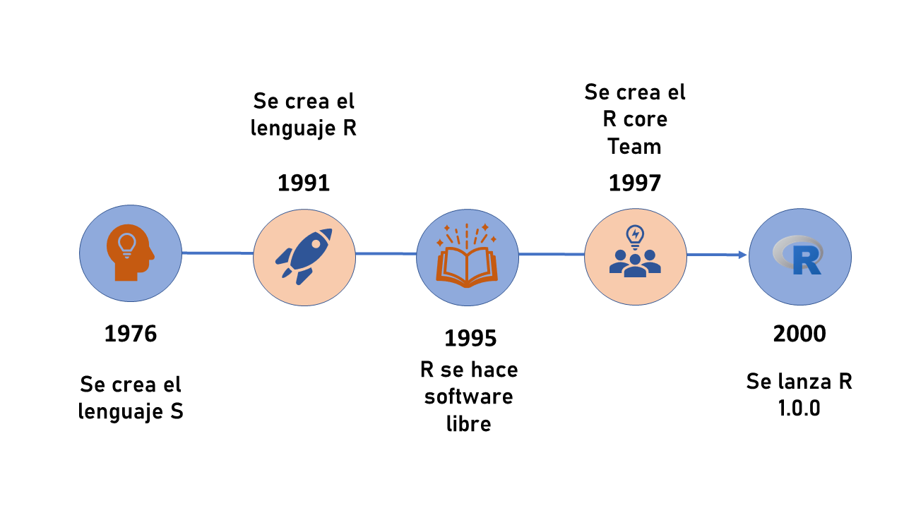
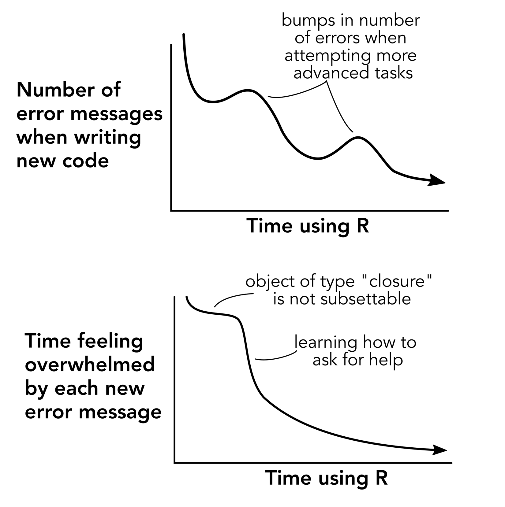

¿Qué es R?
En pocas palabras R es un lenguaje y un ambiente creado para realizar operaciones estadísticas y gráficas. En un principio R se derivó de otro lenguaje, S. El lenguaje S fue un proyecto que inició en 1976 de la mano de John Chambers y que maduró hasta 1998. La idea de S era generar una interfaz que facilitara el análisis de datos a los programadores, pero paulatinamente también a un público menos especializado. Es decir, querían crear algo que nos permitiera escribir un código sin sentirnos programadores.
El problema con S es que tenias que comprarlo y ya sabemos que en nuestros pa√≠ses preferimos invertir el dinero en cosas más importantes, como comida üçî. En 1991 Ross Ihaka y Robert Gentleman se basaron en S, para crear R (Ihaka and Gentleman 1996). Lo crucial respecto a R es que fue creado como un software libre, es decir que además de ser gratuito, su c√≥digo es abierto. √âsto √∫ltimo quiere decir que cualquiera puede ver c√≥mo funciona por dentro y modificarlo. De hecho, R se beneficia de que miles de personas crean herramientas destinadas para much√≠simos fines.
R en sí es joven ya que la primera versión se lanzó al público en el 2000 y ahora es manejado por el R core Team (R Core Team 2017).

¿Qué es RStudio?
Según la wikipedia RStudio es un entorno de desarrollo integrado (IDE), pero básicamente es una interfaz que ayuda a mejorar y potenciar varios aspectos de R (actualmente también de otros lenguajes). Aunque no es el único IDE que existe, si es el más popular. Probablemente porque su filosofía encaja muy bien con la de R. Es un software libre que busca ser usado por todo el mundo. RStudio es bastante joven ya que fue lanzado en el 2010. Recientemente (Octubre 2022), Rstudio fue adquirido por posit. Aunque no cambia mucho su filosofía, este cambio busca integrar lenguajes como phyton, java y julia a la misma interfaz. Una excelente noticia para los locos del data sicence, pero un leve cambio para nosotros los biólogos mortales.
Una cosa bonita de RStudio es que, mantiene y crea una serie de ayudas para aprender R y las funcionalidades de ciertos paquetes. No se si se siga manteniendo en un futuro, pero para saber más de RStudio pueden visitar https://education.rstudio.com/
Los proyectos de RStudio
Entre otras cosas, RStudio permite un esquema de trabajo en proyectos. Cuando empecemos a trabajar con R se darán cuenta que debemos especificar la ruta (dirección de la carpeta) donde estarán los archivos que usaremos. Para ello, cada vez que iniciamos R debemos especificar la dirección. Al crear proyectos con RStudio el IDE automáticamente selecciona la carpeta del proyecto como directorio de trabajo. Tiene otras ventajas, pero esta es la que más nos compete en este nivel.
Para crear el proyecto hay que abrir RStudio, ir a archivo (file) -> nuevo proyecto (new Project). Se abrirá una nueva ventana con tres opciones: Nueva carpeta, carpeta existente y versión de control (este último es para github). Por ahora centrémonos en las dos primeros. La principal diferencia es que en una se crea una nueva carpeta y en la segunda se selecciona una carpeta previamente existente. Como verán hay muchos tipos de proyectos, pero por ahora solo nos interesa un proyecto de R simple. Luego veremos que nos pide que le demos un nombre y verifiquemos la carpeta en la cual se creará.

Para abrir el proyecto simplemente nos vamos a la carpeta que escogimos y abrimos el archivo .Rproj. Este archivo automáticamente abre RStudio. Para verificar que estamos dentro de un proyecto podemos observar en la parte superior derecha del RStudio, donde estará el nombre de nuestro proyecto.

¿Porqué usar R?
Te estarás preguntando porque después de años de perfeccionar tus poderes en Excel, ahora tienes que aprender R. Te puedo dar una razón”fea” y es que en este curso y en muchos de posgrado, ya es un requisito saber R.
Pero tranquil@, R no debería ser una tortura y hay muchas razones más bonitas para aprenderlo:
La reproducibilidad: Algo muy importante en la ciencia, pero que quizás no tenemos muy en cuenta. Al desarrollar un script con el análisis de tu papiro o tesis en R, tienes la capacidad de compartirlo. No solo para que alguien lo replique tal cual y sepa que esta bien o mal, sino también para que otras personas aprendan. De hecho, ahora muchos papiros vienen acompañados de sus respectivo código.
Es como aprender un idioma: Ejercita tu cerebro y te ayuda a mejorar tu razonamiento cuantitativo. No lo digo yo, lo dice la ciencia (Auker and Barthelmess 2020).
Es el futuro: Nos guste o no, las habilidades de programación son cada vez más requeridas y apreciadas (Lai et al. 2019). No solo en la academia, sino también en la industria, saber manejar, graficar y analizar datos puede ser una gran ventaja (Feng, Qiao, and Enquist 2020) . No digo que todos tengan que ser especialistas, pero si tener al menos nociones.
Infinitas (casi) posibilidades: En la actualidad R no es solo para la estadística, puedes hacer muchísimas cosas. Desde documentos, infografias, hasta memes (si hay un paquete para hacer memes). Personalmente, cuando más he aprendido R es cuando lo junto con mis pasatiempos. Hacer gráficas, explorar datos de series, música hasta de política etc.
Todo lo que se puede hacer
Veamos algo de las principales aplicaciones
Manejo de datos
Procesar, transformar y explorar tus datos. Una habilidad que nos ahorrará mucho tiempo y dolor de cabeza. Con R puedes transformar tus datos como tu quieras, siempre y cuando sepas cómo. Esto es importante porque ciertos análisis requieren una estructura de datos particular.

Estadística
En parte es para lo que fue creado R. R tiene la capacidad de ajustar una buena variedad de modelos. Pero es la comunidad la que se ha encargado de agregar a R una gama bastante amplia de análisis . Puedes encontrar hoy en día modelos estadísticos para temas ecológicos, de bioinformatica, filogenia, biología molecular, morfometría etc. Solo basta con saber buscar.

Gráficas
La capacidad gráfica de R es grandiosa. Esta diseñado para generar gráficas con calidad de publicación, pero también puedes ingeniártelas par generar gráficos de divulgación. Puedes hacer mapas, animaciones, arte etc. Puedes pasarte por páginas como https://r-graph-gallery.com/index.html o https://r-charts.com/ para ver muchísimos ejemplos y tips. Aprender a graficar hace parte importante del proceso de explorar tus datos.

Documentos
Con la inclusión de Rmakrwon y Quarto se pude generar documentos de html, pdf y word desde R. Incluso las nuevas versiones de RStudio cuentan con un modo visual para facilitar la escritura de documentos. Hay paquetes diseñados para generar CV, presentaciones, libros, artículos científicos e incluso tesis.

Páginas web
Basta con que te diga que esta página web esta construida con RStudio, usando Quarto blogs.
Aplicaciones
También puedes crear aplicaciones e interfaz de usuario para explorar datos o facilitar la vida. Por ejemplo, si tienes dudas de las estadísticas de algunos pokémon, puedes checar esta app creada en R https://dgranjon.shinyapps.io/shinyMons/_w_74175819/
La comunidad

Quizás lo mejor que tiene R y RStudio es su comunidad. Existen mucha información, tutoriales, guías, páginas de ayuda, foros y comunidades enfocadas en ayudar y enseñar. Lo mejor de todo es que casi siempre es de manera gratuita siguiendo la filosofía de R.
Existe incluso conferencias de R dirigidas a Latinoamérica, patrocinadas por RStudio (ahora posit). Casi todas las charlas están grabadas en youtube así que le pueden chismosear:

Otro ejemplo muy importante de como se organiza la comunidad de R, es el de Rladies. R-laides busca promover la diversidad de género en la comunidad de R. Existe un capítulo de R-ladies en Xalapa y su misión es proporcionar un espacio comunitario seguro para cualquier persona que se identifique como género minoritario. Yo soy muy fan de estas comunidades porque comparten cosas muy bonitas y divertidas de aprender.

Aquí no aprenderán R
R cómo cualquier idioma se aprende practicando, es decir escribiendo. No esperes aprender inglés después de ver una película con subtitulos. Seguramente, aprenderás una palabra u otra, pero no estarás listo para tener una conversación. Lo mismo pasa con R, en este curso te daremos las herramientas para comenzar, pero es normal que al final sientas que no sabes nada (me pasó a mi y creo que nos pasará a todos). No te frustres si terminas el curso y sientes que no sabes nada, porque este es apenas el inicio. Seguramente, cuando estés por tu cuenta regresaras a buscar scripts, para recordar como se graficaba o incluso la manera en que se cargan los datos. También te enfrentaras a muchos errores y es que R no se trata de no cometer errores, sino de cometer tantos que ya sabes como solucionarlos.

En conclusión, que aprendas R dependerá de cuanto tiempo le dediques, no de que tomes este tutorial o no (Lawlor et al. 2022). Así que mucho ánimo y éxitos en tu aventura.